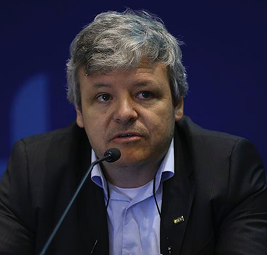
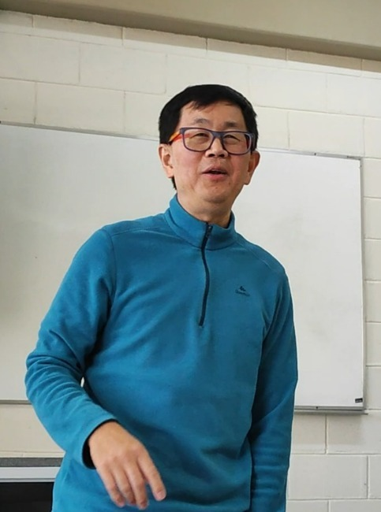
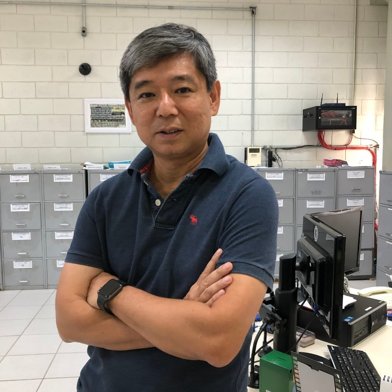

Antônio Wellington Sales Rios
Conheça mais a História do Professor Antônio Wellington Sales Rios
Saiba +



Reinaldo Arakaki
Conheça mais a História do Professor e coodernador do curso de Desenvolvimento de Software Multiplataforma Reinaldo Arakaki
Saiba +Marcus Vinicius
Conheça a trajetória inspiradora do ex-aluno e atual coordenador do curso de Logística, Professor Marcus Vinicius.
Saiba +
Edmar de Queiroz Figueiredo
Conheça a trajetória do Professor Edmar de Queiroz Figueiredo, que transitou da indústria para a docência, trazendo rica experiência em engenharia aeronáutica para a formação dos alunos da FATEC.
Saiba +Maria Suelena Santiago
Conheça a história da Professora Maria Suelena Santiago, uma educadora multidisciplinar com formações em Engenharia Mecânica, Matemática e Ciências Biológicas, que dedica 19 anos à FATEC.
Saiba +